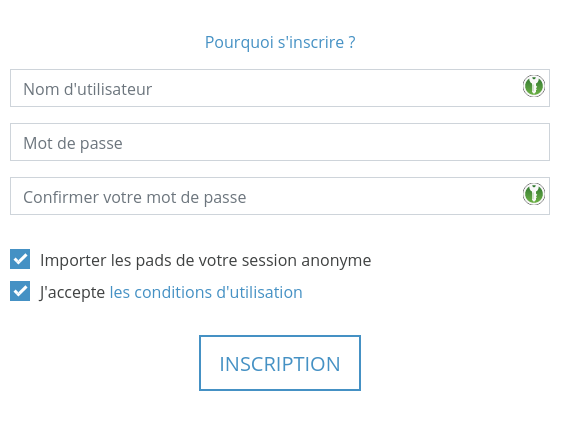

Compte utilisateur¶
CryptPad chiffre vos données, elles ne sont lisibles que par vous et vos collaborateurs. Pour cette raison les administrateurs du service ne peuvent pas voir ou changer votre mot de passe. Il est donc important de le sauvegarder dans un endroit sécurisé, hors de votre compte CryptPad.
CryptPad utilise la combinaison de votre nom d'utilisateur et de votre mot de passe pour vous identifier. Les noms d'utilisateurs ne sont pas uniques sur CryptPad, il est possible de créer plusieurs comptes avec le même nom d'utilisateur et des mots de passe différents.
Types de comptes¶
Il existe trois types d'utilisateurs sur CryptPad :
Utilisateur non-enregistré¶
Les utilisateurs non-enregistré sont identifiés par cet avatar (en haut à droite) :
Aucune information personnelle n'est demandée pour utiliser CryptPad de manière non-enregistrée. Les fonctionnalités sont cependant réduites :
Accès à toutes les applications.
Collaboration et partage de documents.
Durée de stockage limitée à 3 mois d'inactivité (pour chaque document).
Stockage de fichiers indisponible pour les images/vidéos/PDF/etc…
Utilisateur enregistré¶
Les utilisateurs enregistrés ont comme avatar (en haut à droite) leur photo de profil ou la première lettre de leur nom affiché.
Enregistrer un compte ne nécessite pas de données personnelles, seulement un nom d'utilisateur et un mot de passe sont demandés. Les fonctionnalités additionelles sont les suivantes :
Espace de stockage personnel et permanent.
Stockage de fichiers images/vidéos/PDF/etc…
Gestion de documents plus complète en tant que propriétaire : ajout d'un mot de passe, d'une date d'expiration et liste d'accès.
Organisation de vos documents en dossiers, dossiers partagés, en leur assignant des mots-clés ou en sauvegardant des modèles.
Création d'équipes.
Personnalisation de la page de profil et ajout de contacts pour le partage de documents et chat. Notifications pour les interactions entre contacts.
Gestion du compte¶
Inscription¶
Pour enregistrer un nouveau compte, rendez-vous sur la page d'inscription : Inscription en haut à droite sur la page d'acceuil.
Remplir les informations suivantes :
Nom d'utilisateur : Le nom utilisé pour vous connecter sur CryptPad, différent du Nom affiché visible par les autres utilisateurs. Le Nom d'utilisateur ne peut pas être changé une fois le compte créé.
Mot de passe : Il est conseillé d'utiliser un mot de passe complexe. Le mot de passe peut être changé dans les préférences utilisateur.
Danger
Important : Les administrateurs du service CryptPad ne peuvent pas voir ou retrouver votre mot de passe si il est perdu ou oublié.
Conditions d'utilisation : Lire et accepter les conditions d'utilisation du service.
Optionnel :
Importer les pads de votre session anonyme : Si vous avez créé des documents lors d'une session anonyme, vous pouvez les importer dans votre compte.
Connexion¶
Pour vous connecter sur votre compte, rendez-vous sur la page de Connexion (en haut à droite sur la page d'acceuil) et remplissez le nom d'utilisateur et le mot de passe choisis à l'inscription.
Optionnel :
Importer les pads de votre session anonyme : Si vous avez créé des documents lors d'une session anonyme, vous pouvez les importer dans votre compte.
Préférences¶
Les réglages du compte sont accessibles par le menu utilisateur (avatar en haut à droite) > Préférences.
Compte¶
Nom d'utilisateur : Nom utilisé lors de votre inscription. Ce nom n'est pas modifiable. Utilisateurs enregistrés
Clé publique de signature : Utilisée par les administrateurs d'instance et/ou sur les instances avec abonnement. C'est la seule donnée concernant votre compte qui est visible par les administrateurs du service. Utilisateurs enregistrés
Nom affiché : Nom affiché aux autres utilisateurs, par exemple lorsque vous collaborez sur un document. Pour modifier ce nom tapez le nouveau nom et cliquez sur Sauver. Utilisateurs enregistrés
Langue : Langue utilisée dans l'interface de CryptPad. Pour changer de langue, en choisir une dans le menu déroulant. CryptPad est traduit en anglais et en francais par l'équipe de dévelopement, et dans d'autres langues par la communauté. Certaines traductions peuvent être incomplètes et/ou comporter des erreurs.
Limite de téléchargement automatique : Taille maximale en mégaoctets (Mo) pour le chargement automatique des pièces jointes (images, vidéos, pdf) intégrés dans les documents. Les pièces jointes dont la taille est supérieure à la taille spécifiée peuvent être chargés manuellement. Utilisez "-1" pour toujours charger automatiquement les pièces jointes.
Changer de mot de passe : Entrez votre mot de passe actuel et confirmez le nouveau mot de passe en le tapant deux fois. Utilisateurs enregistrés
Suppression du compte : Option pour supprimer définitivement votre compte et ses documents. Pour supprimer votre compte, cliquez sur Suppression du compte puis confirmez. Utilisateurs enregistrés
Confidentialité¶
Fermer les autres sessions : Vous déconnecte de toutes les autres sessions où vous êtes connecté sauf celle où vous activez cette fonctionnalité. (voir aussi Déconnexion à distance) Utilisateurs enregistrés
Stockage des pads dans CryptDrive : Gère si les documents que vous visitez sont automatiquement ajoutés à votre CryptDrive. Si personne n'est propriétaire d'un pad que vous ajoutez à votre CryptDrive, il compte alors dans votre espace de stockage.
Automatique : sauvegarder tous les pads que vous visitez dans votre CryptDrive, sans action de votre part.
Manuel (toujours demander) : ne pas sauvegarder et afficher un message pour sauvegarder ou non chaque document.
Manuel (ne pas demander) : ne pas sauvegarder et ne pas afficher de message.
Liens Sécurisés : Quand cette option est activée, le lien dans la barre d'adresse de votre navigateur ne donne pas accès au pad si le destinataire ne l'a pas déjà dans son CryptDrive. Cette fonction est activée par défaut. Il est vivement recommandé de la laisser activée et d'utiliser le menu Partager pour copier les liens de vos documents.
CryptPad inclut dans ses liens les clés permettant de déchiffrer vos documents. Toute personne ayant accès à votre historique de navigation peut potentiellement lire vos données. Cela inclut les extensions de navigateur intrusives et les navigateurs qui synchronisent votre historique entre les appareils. Toute situation dans laquelle votre navigateur est visible par d'autres est potentiellement à risque, par exemple le partage d'écran en vidéoconférence ou la capture d'écran. L'activation des "liens sécurisés" empêche les clés d'entrer dans votre historique de navigation ou d'être affichées dans votre barre d'adresse quand cela est possible.
Retour d'expérience : CryptPad peut envoyer des retours d'expérience anonymisés très limités vers le serveur, en vue d'améliorer l'expérience des utilisateurs. Le contenu de vos documents n'est jamais partagé. Cette option est désactivée par défaut.
Apparence¶
Thème : détermine le thème de couleurs (clair ou foncé) utilisé par CryptPad. Par défaut, ce réglage suit les paramètres du système d'exploitation et/ou du navigateur, mais il peut également être défini manuellement.
CryptDrive¶
Astuces : Messages d'aide dans l'interface CryptPad. Pour les ré-afficher si ils ont été fermés cliquez sur Réinitialiser.
Doublons des pads dont vous êtes propriétaire : Quand vous déplacez un pad dont vous êtes le propriétaire dans un dossier partagé, une copie est créée dans votre CryptDrive pour s'assurer que vous puissiez garder le contrôle de ce pad. Vous pouvez choisir de cacher ces doublons. Seules les versions partagées seront affichées, jusqu'à leur suppression, dans quels cas, la version dans votre CryptDrive redeviendra visible.
Miniatures : Pour aider à la navigation du CryptDrive en mode grille, CryptPad peut créer des miniatures des documents et les stocker dans le navigateur. Cette option est désactivée par défaut car elle peut ralentir le navigateur pour les ordinateurs moins performants. Le bouton Nettoyer supprime toutes les miniatures existantes.
Sauvegarde : Deux types de sauvegarde sont disponibles.
Sauvegarder ne concerne uniquement les clés des documents dans votre CryptDrive, pas le contenu. Cette option permet de sauvegarder l'accès à vos documents et de les Restaurer dans une autre session.
Télécharger mon CryptDrive sauvegarde le contenu de tous les documents dans le CryptDrive. Quand cela est possible, des fichiers lisibles par d'autres logiciels sont téléchargés. Certaines applications produisent des fichiers qui ne sont lisibles que par CryptPad.
Importer : Si des documents ont étés créés lors d'une session anonyme, ils peuvents être importés dans le CryptDrive. Utilisateurs enregistrés
Effacer l'Historique : L'historique du Cryptdrive et des notifications peut être supprimé pour économiser de l'espace de stockage. Cela n'affecte pas l'historique des documents qui peut être supprimé individuellement dans le dialogue de propriétés.
Curseur¶
Couleur du curseur : Changer la couleur de votre curseur. Celle-ci vous identifie dans les sessions collaboratives. Elle détermine la couleur de votre texte quand Couleurs par auteurs est activé dans les documents Code.
Partager la position de mon curseur : Afficher ou cacher la position exacte de votre curseur aux autres utilisateurs.
Afficher les curseurs des autres utilisateurs (BETA) : Afficher ou cacher la position des curseurs des autres utilisateurs.
Documents texte¶
Réglages utilisateur pour l'application Documents texte.
Largeur de l'éditeur de texte : Passer du mode page (par défaut) qui limite la largeur de l'éditeur de texte, au mode plein-écran qui utilise toute la largeur de l'écran.
Vérification orthographique : Activer la vérification orthographique dans l'éditeur de Texte. Les fautes sont soulignées et des propositions de corrections sont disponibles en faisant
Ctrl + Clic droitsur le mot à corriger.Notifications de commentaires : Désactiver les notifications lorsqu'un utilisateur répond à vos commentaires.
Code¶
Réglages utilisateur pour l'application Code / Markdown.
Indentation dans l'éditeur de code (nombre d'espaces) : Choisir le nombre d'espaces insérés par niveau d'indentation.
Utiliser des tabulations au lieu d'espaces : Insérer des tabulations plutôt que des espaces avec la touche
Tab.Fermer automatiquement les parenthèses : Insérer automatiquement le caractère de fermeture ) quand une parenthèse
(est ouverte (fonctionne également pour[,',").Taille de la police dans l'éditeur de code : Régler la taille du texte dans l'éditeur de code.
Vérification orthographique : Souligner les fautes d’orthographe et vous propose des corrections en faisant
Ctrl + Clic droitsur le mot à corriger.
Support¶
Les tickets de support permettent de communiquer de manière sécurisée avec les administrateurs de l'instance CryptPad. Accédez à la page Support :
Menu utilisateur (avatar en haut à droite) > Support.
Tickets existants : Suivre vos conversations avec l'équipe de support.
Répondre à un ticket.
Fermer un ticket si le problème est résolu.
Supprimer les tickets fermés.
Nouveau ticket : Renseigner un titre, une catégorie et le détail du problème ou de la question dans les champs prévus à cet effet. Ajouter une pièce jointe si besoin, par exemple une capture d' écran, puis cliquer sur Envoyer.
Notifications¶
Utilisateurs enregistrés
CryptPad vous notifie lorsque vos contacts interagissent avec vous. Les notifications sont affichées par la cloche à côté de l'avatar (en haut à droite). Si vous avez des notifications non lues, la cloche est pleine et un compte est affiché.
Menu déroulant en cliquant sur la cloche :
Consulter les notifications non lues.
Supprimer une notification avec .
Ouvrir le panneau de notifications : consulter toutes les notifications et l'historique des notifications reçues.
Sur la page de notifications :
Selctionner le type de notifications à consulter :
Toutes.
Demandes de contact.
Documents partagés avec moi.
Historique.
: Supprimer les notifications.